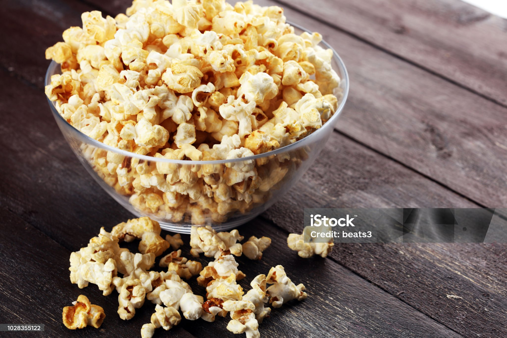

Sweet and Salty Popcorn
Full List of Recipes

Why Should I Make This?
Popcorn is my favorite, and this sweet and salty popcorn is a must have for a weekend movie snack! I stole this from
this site.
Ingredients
- 3 tablespoons vegetable oil
- 1/2 cup popping corn
- 3 tablespoons caster sugar
- Sea salt
Steps
- Add oil to large saucepan and heat on medium high.
Drop in a kernel or two and see if it spins. Once it spins, the oil is ready to go.
Pour in half a cup of popping corn and 3 heaps tablespoons of caster sugar, give it a quick stir and put on the lid.
Occasionally give the saucepan a good shake and let the corn pop away.
- When the popping starts to subside, remove from heat and leave it for a few seconds for the last few to pop.
Its better to remove it from the heat early, otherwise it may burn.
Pour into a bowl and sprinkle generously with salt.